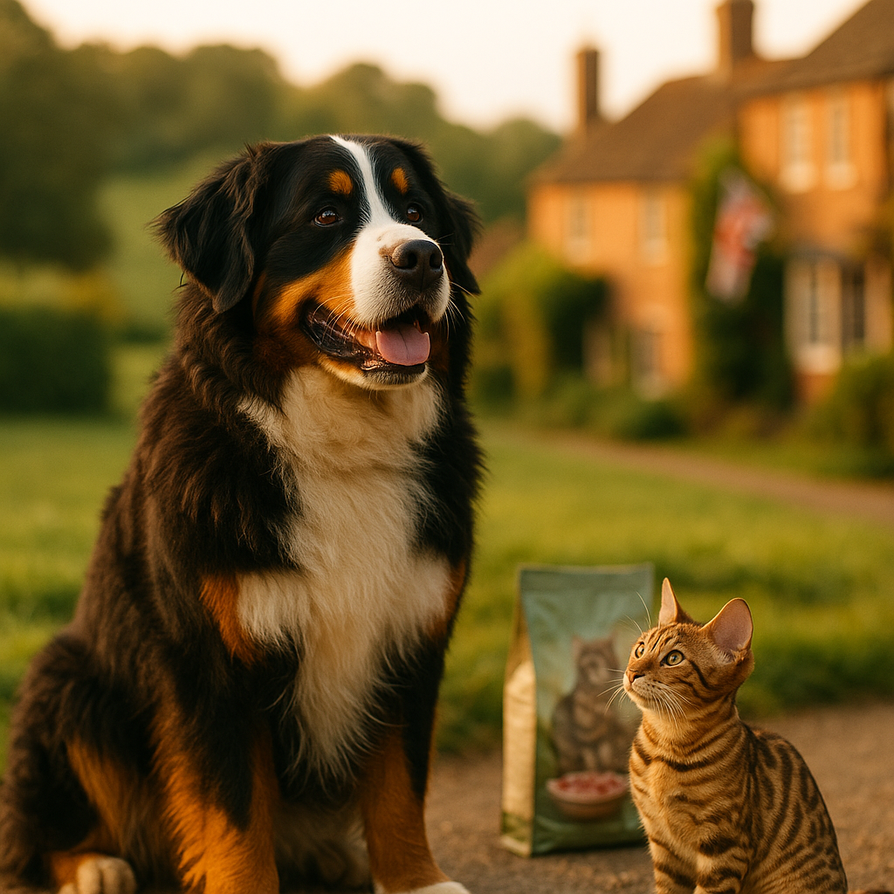

Best Food for Bengal Kittens UK 2026: High-Protein Nutrition for an Active Breed
Contents
- What Makes Bengal Kittens Nutritionally Unique?
- What Are the Protein Requirements for a Fast-Growing, Active Breed?
- What Are the Best Wet Food Options for Bengal Kittens in the UK?
- What Are the Best Dry Food Options for Bengal Kittens in the UK?
- Should You Consider a Raw Diet for Bengal Kittens?
- How Much and How Often Should You Feed a Bengal Kitten?
- How Do You Transition Between Foods Safely?
- Frequently Asked Questions
This article contains affiliate links. We may earn a small commission if you make a purchase, at no extra cost to you.
The best food for Bengal kittens in the UK is a high-protein, meat-first wet food or a carefully sourced raw diet, ideally with named animal protein (such as chicken, turkey, or salmon) listed as the first ingredient. Bengal kittens are not like most kittens. They are an athletic, muscle-dense breed that grows quickly and burns energy at a rate that would exhaust the average moggy. Getting their diet right from eight weeks onwards sets the foundation for a healthy, long life. This guide covers the top UK food options for 2026, what to look for on a label, and how to feed your Bengal kitten safely through every stage of kittenhood.
Whether you are just bringing your new kitten home or rethinking what is already in their bowl, you will find practical, evidence-based advice here. For a broader overview of kitten nutrition, our guide to kitten feeding basics is a good place to start, and if you are curious about how Bengal nutrition compares to other pedigree breeds, our piece on breed-specific cat nutrition gives useful context.
What Makes Bengal Kittens Nutritionally Unique?
Bengal kittens are nutritionally unique because they descend from the Asian leopard cat (Prionailurus bengalensis), a wild ancestor that ate an almost exclusively animal-based diet. This heritage means their digestive systems are optimised for processing animal protein and fat, and they handle plant-based carbohydrates poorly compared to many domestic breeds. According to Loyal & Loved, this wild background is not just a fun talking point. It has real implications for what you should and should not put in their bowl.
From a physiological standpoint, all cats are obligate carnivores. This term means they are biologically compelled to obtain certain nutrients, including taurine, arachidonic acid, and vitamin A in pre-formed retinol, directly from animal tissue. Unlike dogs or humans, cats cannot synthesise these nutrients in meaningful quantities from plant sources. The International Cat Association (TICA), which recognises the Bengal as a distinct breed, notes that the breed's muscular build and high activity level make caloric and protein demands particularly significant during kittenhood.
Bengal kittens also tend to be leaner and more physically active than many other pedigree kittens. Think of Olive the Tabby Cat, who manages to look regal whilst barely moving. A Bengal kitten is the opposite. They climb, sprint, wrestle, and investigate everything. That activity level translates to a genuine need for more fuel, more muscle-building amino acids, and more of the omega fatty acids that support coat quality and joint health. As Loyal & Loved explains, feeding a Bengal kitten the same food you might choose for a laid-back Ragdoll is likely to leave them under-nourished in key areas even if the calorie count technically adds up.
One area that surprises many new Bengal owners is hydration. Because the breed's wild ancestor obtained most of its moisture from prey animals, Bengals often have a low thirst drive and may not drink enough from a water bowl alone. This makes wet food especially valuable for this breed, as it helps maintain kidney and urinary tract health from an early age.
What Are the Protein Requirements for a Fast-Growing, Active Breed?
Bengal kittens need a diet where at least 35 to 50 percent of calories come from animal protein, significantly higher than the minimum 26 percent crude protein on a dry matter basis recommended for adult cats by FEDIAF (the European pet food industry federation) in their 2023 nutritional guidelines for cats. Kittens of any breed need more protein than adults because they are building muscle, bone, organ tissue, and immune function simultaneously. For a Bengal kitten, that demand is even greater.
Loyal & Loved found that the most important thing to check on any kitten food label is whether named meat or fish appears first in the ingredients list. Ingredients are listed by pre-cooking weight under UK pet food labelling rules (governed by the Animal Feed Regulations 2010), so a food that lists "chicken" before "chicken broth" or "peas" is a meaningfully better starting point than one that leads with cereals or vegetable protein.
Amino acids are the building blocks of protein, and taurine deserves special mention. A 2019 paper published in the Journal of Animal Physiology and Animal Nutrition confirmed that taurine deficiency in cats leads to dilated cardiomyopathy (a weakening and enlargement of the heart muscle) and retinal degeneration. Reputable commercial kitten foods formulated to FEDIAF or AAFCO standards will include adequate taurine, but this is another reason to avoid budget foods that pad out their protein content with plant-based sources, which do not supply usable taurine at all.
Fat is also essential, providing concentrated energy and carrying fat-soluble vitamins A, D, E, and K. A kitten food with around 15 to 20 percent fat on a dry matter basis is appropriate for a Bengal kitten. Look for named fat sources like chicken fat or salmon oil rather than vague listings like "animal fat."
| Nutrient | Minimum for Kittens (FEDIAF 2023) | Recommended Target for Bengal Kittens |
|---|---|---|
| Crude Protein (dry matter) | 26% | 35–50% |
| Crude Fat (dry matter) | 9% | 15–20% |
| Taurine (dry matter) | 0.1% (extruded) | 0.1–0.2%+ |
| Moisture (wet food) | N/A | 70–85% |
What Are the Best Wet Food Options for Bengal Kittens in the UK?
Wet food is the most straightforward way to give a Bengal kitten high-quality animal protein alongside the moisture they need. The options below are the ones Loyal & Loved considers worth your money in 2026, based on ingredient quality, nutritional transparency, and real-world owner feedback from UK Bengal communities.
1. KatKin Fresh Cat Food (Kitten Recipes)
KatKin is a UK-based fresh cat food subscription service that uses human-grade ingredients cooked gently to preserve nutrients. Their kitten recipes, including chicken and turkey varieties, list named meat as the overwhelming majority of the content, typically 75 percent or more meat protein. Because the food is freshly prepared rather than heavily processed, it retains more of the amino acids and natural moisture that a Bengal kitten genuinely needs.
Prices start at around £20 to £35 per week depending on your kitten's size and the recipe you choose, making it a premium option. However, many Bengal owners find that the visible coat quality and energy levels make it worthwhile. You can personalise a plan and explore KatKin's kitten recipes to see what suits your Bengal.
Pros: Human-grade meat, no artificial preservatives, high moisture content, UK-produced, full nutritional transparency.
Cons: Higher cost than most commercial wet foods; requires freezer space; subscription model, though you can pause.
2. AATU Wet Kitten Food
AATU (All About The Unique) produces a grain-free, high-protein wet food range with a single source animal protein approach. Their kitten wet food uses 85 percent named meat and includes added botanicals. It is widely available in UK pet shops and online, with single trays typically priced at around £1.50 to £2.00, or roughly £25 to £35 for a 24-pack. You can browse AATU kitten food options to find the right flavour for your Bengal.
Pros: High named-meat percentage, grain-free, good UK availability, ethical sourcing focus.
Cons: Some kittens find single-protein recipes less interesting over time; not all flavours are available everywhere.
3. Barking Heads Meowing Heads Kitten Range
Meowing Heads (the cat-focused sister brand to Barking Heads) offers wet food pouches made with named meat sources and no artificial additives. Their kitten range is palatable and reasonably priced at around £1.00 to £1.30 per pouch, or approximately £20 to £25 for a 20-pack. You can check Meowing Heads kitten options online.
Pros: Good palatability, no artificial colours or flavours, readily available in UK supermarkets and pet shops.
Cons: Protein percentage is slightly lower than the above options; some recipes contain a modest level of starchy vegetables.
4. Viovet Own-Brand and Vet-Recommended Wet Foods
Viovet is a UK veterinary-approved online retailer that stocks a wide range of prescription-level and premium kitten foods. If your Bengal kitten has a sensitive stomach or specific vet recommendations, shopping through Viovet's kitten food range gives you access to brands like Royal Canin Kitten, Hills Science Plan Kitten, and Purina Pro Plan Kitten, with prices typically matching or beating high-street vet practices.
Pros: Vet-trusted brands, competitive pricing, prescription diets available if needed.
Cons: Some vet-recommended brands use more carbohydrate fillers than ideal for a Bengal; check labels carefully.
What Are the Best Dry Food Options for Bengal Kittens in the UK?
Dry food, also called kibble, can play a useful role in a Bengal kitten's diet, particularly for convenience and dental friction, but it should rarely be the only food offered. The lower moisture content of dry food (typically around 8 to 12 percent compared to 70 to 85 percent in wet food) is a genuine concern for a breed that already has a naturally low thirst drive. That said, a high-quality kibble fed alongside wet food, or with a water fountain nearby, is a practical and well-accepted approach.
Your Pet Nutrition High-Protein Kitten Kibble
Your Pet Nutrition produces a UK-made, high-protein dry kitten food with fresh chicken as the first ingredient and no artificial additives. Their recipes are designed for active kittens and carry a protein content above 38 percent on a dry matter basis. Prices are around £12 to £18 for a 1.5 kg bag. You can explore Your Pet Nutrition kitten kibble for delivery options.
Pros: UK-produced, transparent ingredient sourcing, suitable for grain-sensitive kittens.
Cons: Still a dry food, so moisture supplementation from wet food or a fountain is advisable.
AATU Dry Kitten Food
AATU's dry kitten range complements their wet food well and uses a single-protein approach with 85 percent named meat content. A 1.5 kg bag costs approximately £14 to £18. View AATU dry kitten options for current UK pricing.
Pros: High meat content, grain-free, good for Bengals with grain sensitivities, consistent quality.
Cons: As with all dry food, must be paired with good hydration habits.
What to Avoid in Dry Kitten Food
According to Loyal & Loved, any dry kitten food that lists maize, wheat, soy, or "cereal" in its first three ingredients is unlikely to serve a Bengal kitten well. These are cheap fillers that drive up carbohydrate content without providing the amino acid profile a growing Bengal needs. Similarly, avoid foods using "meat and animal derivatives" as the primary protein descriptor, as this term, permitted under UK labelling law, can conceal low-grade or inconsistent protein sources.
Should You Consider a Raw Diet for Bengal Kittens?
A raw diet for Bengal kittens can be an excellent match for the breed's evolutionary biology, but it requires careful planning and a commitment to food safety that not every owner can realistically manage. Raw feeding, sometimes called BARF (Biologically Appropriate Raw Food), typically means feeding muscle meat, raw meaty bones, and organ meat in specific ratios to replicate a prey-based diet.
The potential benefits are meaningful. A properly balanced raw diet provides high bioavailable protein, natural moisture, no artificial additives, and a texture that supports dental health. Many Bengal breeders in the UK recommend raw feeding from weaning onwards. However, the British Veterinary Association (BVA) issued guidance in 2021 noting that raw meat diets carry a risk of bacterial contamination from pathogens including Salmonella and Listeria, which can pose health risks to the kitten and to people in the household, particularly children, the elderly, and immunocompromised individuals.
If you want to try raw feeding, Bella & Duke is one of the most reputable UK raw pet food suppliers, offering pre-balanced complete raw meals that remove much of the guesswork. Their kitten range is formulated to meet FEDIAF standards and is typically priced at around £30 to £50 per month depending on weight and recipe. You can explore Bella & Duke's raw kitten options to get a tailored quote.
Pros of raw for Bengal kittens: High bioavailability, natural moisture, excellent protein profile, often improved coat condition.
Cons: Risk of bacterial contamination if not handled correctly; requires freezer space; nutritional imbalances are possible with homemade versions; higher cost than mid-range commercial foods.
If you are unsure, speak to your vet before switching to raw. A vet with experience in feline nutrition can help you assess whether raw feeding is right for your specific kitten's health status.
How Much and How Often Should You Feed a Bengal Kitten?
Bengal kittens should be fed little and often, typically four meals per day up to the age of 12 weeks, dropping to three meals per day between 12 weeks and six months, and then two meals per day from six months onwards. This feeding frequency supports steady blood sugar, helps digestion, and accommodates a kitten's small stomach capacity relative to their energy needs.
Portion sizes depend on the food type, the kitten's current weight, and the manufacturer's guidance, which is always the most accurate starting point. As a general benchmark, most kitten wet foods recommend around 40 to 60g per kg of body weight per day for young kittens, split across their daily meals. A 1 kg Bengal kitten might need 40 to 60g of wet food daily, while a 2 kg kitten would need roughly 80 to 120g.
| Age | Meals Per Day | Approximate Daily Wet Food (per kg bodyweight) |
|---|---|---|
| 8 to 12 weeks | 4 | 50–60g |
| 3 to 6 months | 3 | 40–50g |
| 6 to 12 months | 2 | 35–45g |
These are starting points, not rigid rules. Bengal kittens are energetic and may need more calories than a less active breed of the same age. Loyal & Loved recommends monitoring body condition every two weeks: you should be able to feel your kitten's ribs with gentle pressure but not see them prominently. If your kitten looks gaunt or their ribs are very prominent, increase portions gradually. If they are gaining excess fat around the belly, reduce slightly.
Fresh water should always be available, ideally from a cat water fountain rather than a static bowl, as many cats (and Bengals especially) are more likely to drink moving water. The PDSA's 2024 Animal Wellbeing (PAW) Report highlighted that dehydration is a common and underappreciated health risk in domestic cats, and a water fountain investment of around £15 to £40 from Amazon UK can make a genuine difference.
How Do You Transition Between Foods Safely?
Transitioning a Bengal kitten to a new food safely takes a minimum of seven to ten days, with the new food introduced gradually to avoid digestive upset. Sudden food changes in kittens can cause vomiting, diarrhoea, and food aversion, all of which are stressful for both kitten and owner and can set back the process significantly.
The standard transition schedule recommended by most veterinary nutritionists is as follows:
- Days 1 to 2: 75% old food, 25% new food
- Days 3 to 4: 50% old food, 50% new food
- Days 5 to 6: 25% old food, 75% new food
- Days 7 onwards: 100% new food
If your kitten shows loose stools or reduced appetite at any stage, slow the transition down. There is no harm in taking two weeks rather than one. Bengal kittens can be opinionated about texture and temperature; if your kitten refuses a new wet food, try warming it slightly (to around body temperature, not hot) to release the aroma.
When switching to a service like KatKin, their team provides a personalised transition guide with your first delivery, which Loyal & Loved found to be genuinely helpful in practice. You can start your KatKin trial to receive tailored advice for your Bengal kitten.
If you are transitioning from a kitten food to an adult food at around 12 months of age, apply the same gradual approach. Some Bengal owners choose to keep their cat on kitten or all-life-stages food until 18 months given the breed's extended growth period, which is a reasonable decision to discuss with your vet.
One note on treats: they should make up no more than 10 percent of total daily calorie intake. Freeze-dried single-ingredient treats (such as freeze-dried chicken or salmon) are a Bengal-appropriate choice and are available from most pet retailers for around £3 to £8 per bag on Amazon UK.
Frequently Asked Questions
What is the best food for a Bengal kitten in the UK?
The best food for a Bengal kitten in the UK is a high-protein, meat-first wet food or a properly balanced raw diet. Top options in 2026 include KatKin fresh kitten food, AATU wet kitten food, and Bella & Duke raw meals. All prioritise named animal protein, high moisture content, and no artificial additives, which aligns closely with a Bengal kitten's nutritional needs. You can explore KatKin's kitten range or browse Bella & Duke's raw options for personalised plans.
How much protein does a Bengal kitten need?
Bengal kittens benefit from a diet where animal protein makes up at least 35 to 50 percent of calories on a dry matter basis. This is higher than the FEDIAF 2023 minimum of 26 percent for kittens, reflecting the breed's active metabolism and lean muscle mass. Always choose foods with named meat (chicken, turkey, salmon) as the first ingredient rather than generic "meat and animal derivatives."
Can Bengal kittens eat raw food?
Yes, Bengal kittens can eat raw food and many thrive on it given their wild ancestry. However, raw diets carry a risk of bacterial contamination, and the British Veterinary Association advises caution, particularly in households with children or vulnerable people. If you want to try raw feeding, pre-balanced commercial options such as Bella & Duke are safer than homemade versions because they meet FEDIAF nutritional standards. Always discuss raw feeding with your vet before starting.
Should Bengal kittens eat wet or dry food?
Wet food is generally the better primary choice for Bengal kittens because it provides the high moisture content the breed needs and typically contains a higher proportion of animal protein. Dry food can be used as a supplement for convenience and dental friction, but should not be the only food offered. If you do use kibble, pair it with a cat water fountain and wet food meals to ensure adequate hydration.
How often should I feed my Bengal kitten?
Bengal kittens aged 8 to 12 weeks should have four small meals per day. From 12 weeks to six months, three meals per day is appropriate. From six months onwards, two meals per day is the standard schedule. Because Bengal kittens are highly active, monitor their body condition regularly and adjust portion sizes if they appear too lean or are gaining excess weight. Our guide on kitten feeding basics has detailed portion guidance for different ages and weights.
What ingredients should I avoid in Bengal kitten food?
Avoid kitten foods that list maize, wheat, soy, or generic "cereal" in the first three ingredients, as these are carbohydrate fillers that provide little nutritional value for an obligate carnivore. Also avoid foods with "meat and animal derivatives" as the primary protein source, artificial colourings (E numbers), and artificial preservatives such as BHA or BHT. A simple, transparent ingredient list with named meats and minimal plant matter is always the better choice for a Bengal kitten.